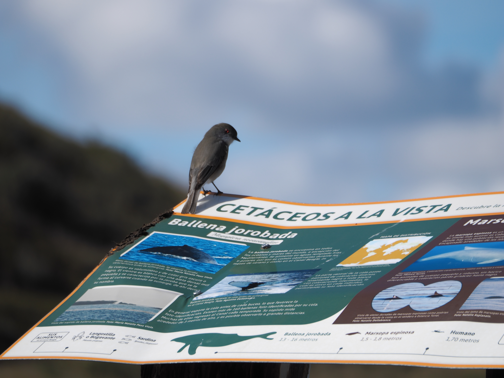
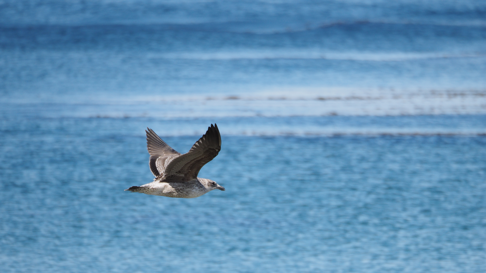
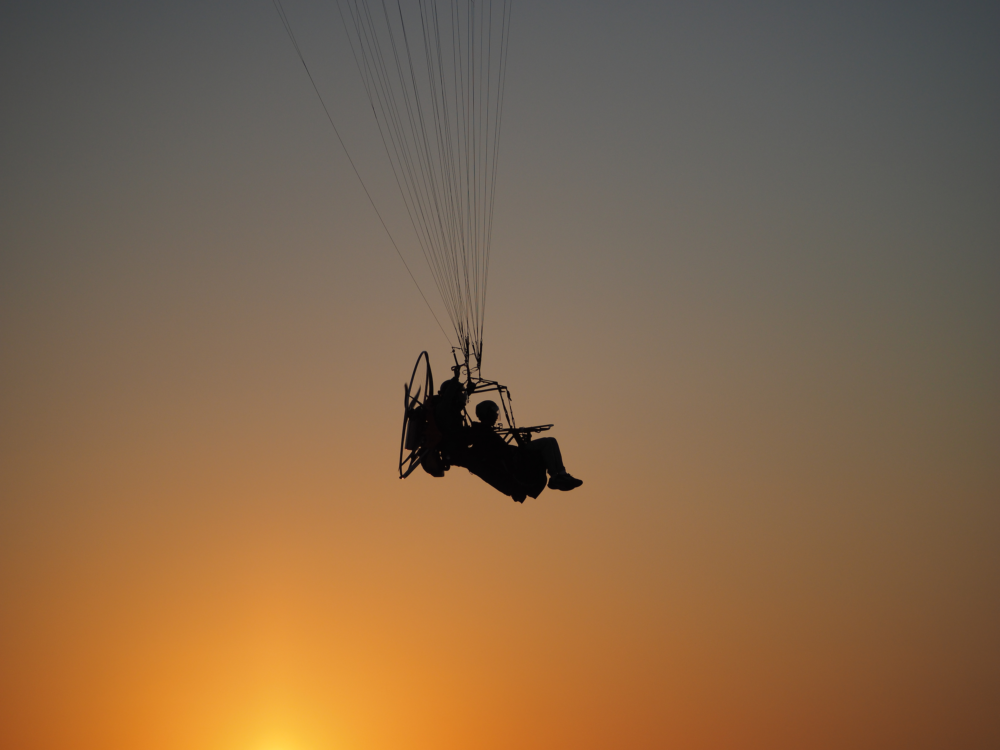
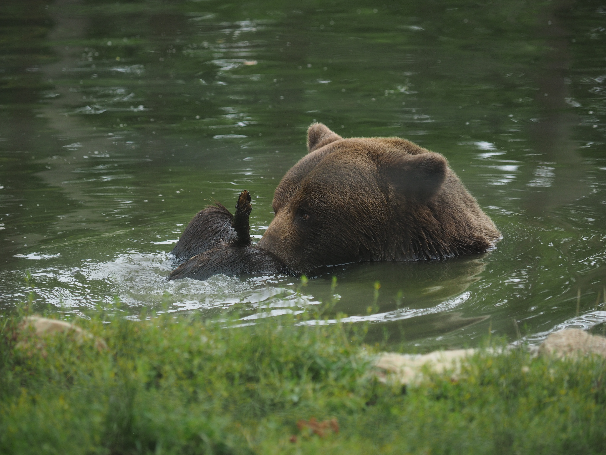

A view of Mt. Hermon's foothills through a snowy tree. Taken at Mt. Hermon,
Israel.

A close up of a snowy tree. Taken at Mt. Hermon, Israel.

A small bird perched on a sign in southern Argentina.

A seagull flying over light blue water in southern Argentina.

A Gentoo penguin, with a Magellanic penguin and a Cormorant in the background,
taken in southern Argentina.

A Gentoo penguin holding a stone, taken in southern
Argentina.

An Andean Condor preparing to land, seen through a tree with an iceberg in the
background. Taken at the Perito Moreno glacier, in Argentina.

A tour boat with a huge iceberg dwarfing it in the background. Taken at the
Perito Moreno glacier, in Argentina.

A motorized paraglider silhouetted against the sunset. Taken in Haifa, Israel.

A bear in a pond fascinated by a stick. Taken in the Libearty Bear Sanctuary,
Zărnești, Romania.

A vulture staring at the camera through a cage. Taken at the Hai-Bar wildlife
rehabilitation center, Haifa, Israel.

A side-profile of a Rhinoceros Iguana on a black background. Taken at the
Australia Zoo, Queensland, Australia.